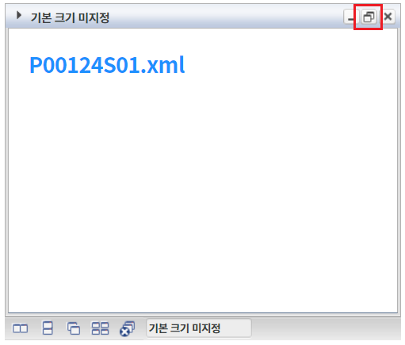
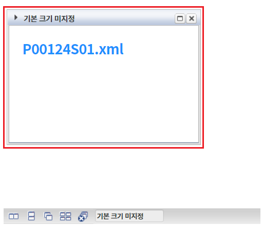
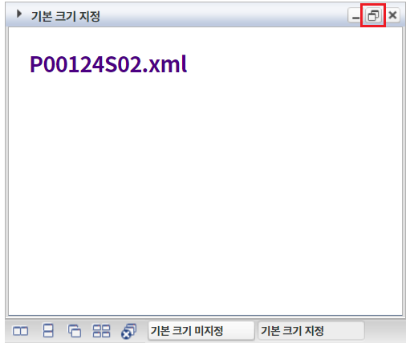
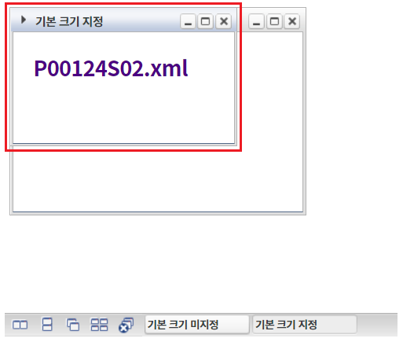

WindowContainer의 윈도우를 생성할 때, 윈도우의 기본 너비와 높이를 설정한 예제입니다. 이 기능은 WindowContainer의 'createWindow' 메소드의 첫 번째 인자인 JSON 객체의 'defaultWidth'와 'defaultHeight'를 설정하여 구현되었습니다. 윈도우의 상단에 구성된 '창 사이즈 복원' 아이콘을 클릭했을 때, 윈도우의 크기가 이 설정의 값으로 적용됩니다.
window 생성 - 기본 크기 미지정
window 생성- 기본 크기 지정
1
STEP 1: 윈도우를 생성합니다.
버튼 'window 생성 - 기본 크기 미지정'을 클릭합니다.
2
STEP 2: 윈도우의 크기를 기본 크기로 변경합니다.
생성된 윈도우 '기본 크기 미지정'의 타이틀 영역의 아이콘 '창 사이즈 복원'을 클릭합니다.
Image 1.브라우저(Chrome) 실행 예시

3
STEP 3: 실행 결과를 확인합니다.
윈도우의 크기가 기본 설정 값의 크기(300px X 210px)로 변경됩니다.
Image 2.브라우저(Chrome) 실행 예시

1
STEP 1: 윈도우를 생성합니다.
버튼 'window 생성 - 기본 크기 지정'을 클릭합니다.
2
STEP 2: 윈도우의 크기를 기본 크기로 변경합니다.
생성된 윈도우 '기본 크기 지정'의 타이틀 영역의 아이콘 '창 사이즈 복원'을 클릭합니다.
Image 3.브라우저(Chrome) 실행 예시

3
STEP 3: 실행 결과를 확인합니다.
윈도우의 크기가 230px X 140px로 변경됩니다.
Image 4.브라우저(Chrome) 실행 예시

'createWindow' 메소드를 사용하여 스크립트를 작성합니다.
Example 1.Script
//예제 파일의 경우 scwin.btn_ex2_onclick에 작성되어 있습니다. //windowContainer "wdc_exam1"에 윈도우 생성하기 wdc_exam1.createWindow({ "title": "기본 크기 지정", "frameMode": "wframe", "src": "/page/P00124S02.xml", "windowId": "w_P00124S02", "defaultWidth": "230px", //기본 너비 지정 "defaultHeight": "140px" //기본 높이 지정 });
createWindow( title , iconUrl , src , windowTitle , windowId , openAction , closeAction , windowTooltip , windowHeaderHTML , options , frameMode )